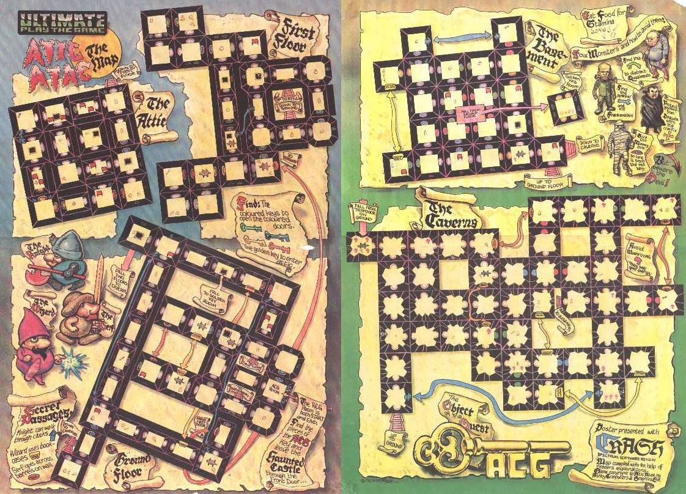
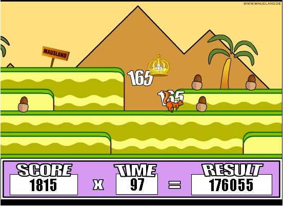
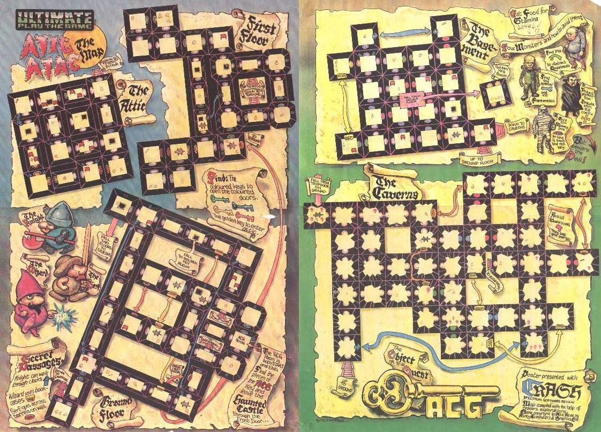
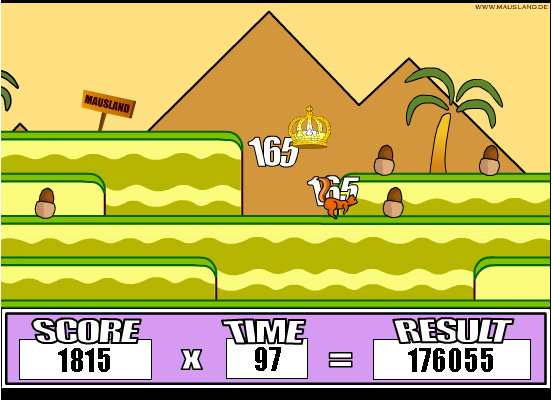
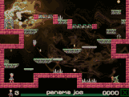
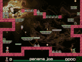
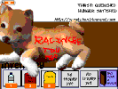
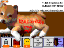
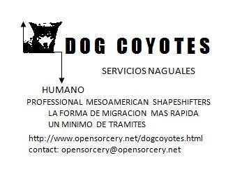

March 3, 2026: Virtua Fighter
La ex-fábrica de hielo estaba medio quemada hace años por unos adolescentes, aunque rumoraron silenciosemente que fue por una batalla de narcos. Subías de la calle por unas escaleras largas y medio descompuestas hasta una plataforma abierta de cemento . Ya no habían muros, solo unas columnas de ladrillos y varillas de la esperanza que enmarcaban vistas lejanas: al pueblo y a su iglesia por un lado, y hasta los cerros de la costa illuminados por los últimos rayos del sol por el otro. Era como un teatro griego en ruinas, envuelto en un estrato de vidrio roto, basura y botellas vacías
Cuando lleguamos ya estaba Maura en una camiseta y unos pantalones sueltos. Me dio una escoba y me hizo barrer. Hilos jugaba con un coco seco como si fuera una pelota, gruñendo y aventándoselo. Mientras, yo limpiaba, que a mi no se me hacia muy educativo, Maura circulaba dentro de una serie de movimientos y ejercicios raros, que me recordaban a las peliculas de kung fu que aparecían muy tarde los domingos en la tele, a pesar de que los movimientos no cortaban el aire tanto con las manos. Maura pegaba, jalaba y pateaba a un oponente invisible con todo el cuerpo, nunca perdiendo el equilibrio o mostrando demasiado esfuerzo. Hilos dejó de jugar con su coco y se quedó sentado y alerta, fascinado por Maura.
Cuando había borrado un gran círculo limpo en el piso, Maura me indico que era momento para empezar la segunda parte de la lección. Imagínate que soy tu enemigo. Atácame con toda tu fuerza, y con todas las armas que tienes disponibles, indicando a la escoba que traía. Hice un arco con la escoba hacia Maura, gritando para advirtirle de mi ataque, que no se me hacía muy justo por que ella no traía ningún arma. Sin saber cómo, me encontre espalda abajo en el piso, viendo las nubes.


 

Feb 19, 2026: Un nuevo aprendizaje
Era una tarde de un calor pesado y me dormí en la hamaca enfrente de la tienda de Janaina. Tuve una pesadilla: que estaba caminando con Hilos y oímos que se nos acercaba algo grande y hambriento. Intentaba interponereme entre Hilos y el predador pero Hilos saltó en frente de mí gruñendo y desapareció adentro de las plantas. Luego la selva empezaba a sangrar un liquido negro y espeso. A pesar del clima, me corrió un escalofrío por la espalda y me entro una gran tristeza sin saber por qué. Cuando me desperté todavia estaba temblando. Ya estaba bajando el sol y corrí hasta la choza de Hilos. En vez de saludarme con sus saltos de alegría de costumbre, que ahora que habia llegado a su tamaño adulto casi me quitaban el equilibrio, todo estaba vacío. Vi unas gotas de sangre en la tierra cerca de la entrada. Las seguía hasta que en la sombra de una roca encontré a Hilos echado, jadeando con tres rasguños profundos en las costillas.
Para el dolor le hice masticar un poco de hoja de coca con agua. Por suerte las tenía secando encima de la choza porque hace poco había ido con Janaina a juntar plantas para la tienda. Chequé mi celular y como temía, no había recepción. Luego me senté en el piso y cerré mis ojos. Intenté vaciar mi mente de toda preocupación y pensamiento. Cuando mi respiración por lo menos se desaceleró, me concentré en mandar un mensaje pidiendo socorro a Janaina, imaginado la choza y a Hilos con sus heridas para indicar de qué se trataba y dónde estabamos. Sentí una respuesta, como un dedo empujando la periferia de mis pensamientos. Luego mientras esperaba me concentré en hacer fluir un corriente de energía curativa desde mi centro hacia Hilos. Oí que sus jadeos se tranquilizaron.
Cuando apareció Janaina después de como una media hora interminable no estaba sola. Maura, la señorita del Internet caminaba con ella, las grandes flores amarillas de su vestido illuminadas de lejos por la luna. Supongo que era guapa, porque los niños de la escuela bromeaban acerca de ella, pero no era la guapura de la tele que yo admiraba. Tenia chinos medio cortos que escapaban en multiples direcciones y no traía maquillaje, solamente pintaba sus labios de un color llamativo de rosa casi naranja. Cuando llegaron mi tía abuela nos hizo llevar a Hilos a su choza y colgó una lampara del techito. Sacó varias hierbas de su bolsa y las mezclaba en un molcajete para quitar sus esencias. Cubrió las heridas de Hilos con esta mezcla y le dió agua y un polvo para dormirse profundamente. Luego pronunció que iba a recupurarse lentamente dentro de una semana. Mercedes, tu tienes que reaplicar los medicamentos cada noche.
Aliviada, acaricié la cabeza de Hilos y salí de la choza con Janaina y Maura. Hablando hacia mi tia abuela, (no sabia porque habia llevado a Maura porque parecía que sabía menos de curandería que yo), le conté lo de mi sueño con Hilos y el peligro que nos amenezaba. Si mi hija, respondio, ya es hora que siguas tu formación con otra maestra para que los dos aprendan a defenderse. Miraba sospechosamente a Maura quien no decía nada, parada como una estatua con una pequeña sonrisa. Maura está de acuerdo con enseñarles las artes marciales de los naguales y los pasos para cumplir el intercambio corporal. Además, aunque has mejorado mucho, no creo que tu talento fuerte sea la curandería. Tus preparaciones en la cocina siempre necesitan intervenciones, sonrió mi tia abuela. Me sentíofendida, e iba a protestar que Janaina siempre tomaba mi chocolate con mucho gusto. Ademas me confundió lo de "enseñarles"--con quien iba a aprender? Pero por fin empezaba a hablar Maura, en una voz profunda y suave. En dos semanas, el Miércoles a las 4 de la tarde me encuentran, tu e Hilos, en la fabrica de hielo abandonada a la entrada del pueblo.

 



 

Feb 2, 2025: Dias olvidables
Me desperté en cama, en casa de mi tía abuela. Ay, Tía, que sueño tan raro tenía..soñé que encontré un perro y luego… toque mi muslo y encontré el símbolo..Entró mi tía en el cuarto, se sentó a mi lado y tomó mi mano. Estabas dormida un dia entero niña. Dije a todos que tenias gripe. Tienes un poder especial pero lo vas a tener que ocultar cuidosamente mientras estas niña e Hilos todavia es chiquito, pues vas a aprender ocultar aun cuando eres grande. Hilos vive?! Interrumpí, llena de alegría. Si, pero tambien es un secreto. Solo lo puedes ver en la noche en el bosque y puedes aprender a soñar con el. Vas a tener que educarlo y alimentarlo mientras sigue chiquito. Si, si. dije, Todo lo necesario!....
Los dias seguían muy parecidos como antes pero no eran iguales. Andaba a la escuela en la mañana y en la tarde me quedaba en a la tienda de mi tía abuela. En la noche regresaba a casa con mi mamámamá pero a veces me quedaba con la tía abuela cuando mi mamá era ocupada. Encima de los trabajos que me pidieron de la escuela, (y no se me hacia muy difícil simular un nivel basico de buenas calificaciones), mi tía abuela, a quien ahora llamaba con su nombre de curanderia: Janaina, me daba tareas cada semana. Tenia que aprender a respirar con los elementos afuera de mi cuerpo. Respiraba con ramas y con el viento, las alas de las polillas y abajo del agua del arroyo con las pierdras soleadas. Cerrando los ojos, aprendi enfocar la energia de la tierra y el aire hasta que jalarlo, (contaminado como sea con envidia, deseos humanos, y humo negro), de la aldea. Lo conecentré en un bola pesada y pegajosa entre mis manos y con esta bola aprendí a girar y mover un lapiz y otros objetos de tamaño diminuto en la dirreción que yo quisiera. Janaina me enseñaba los nombres de las hierbas y a veces las buscabamos en el bosque. Me platicaba para cuales enfermedades servian curar y en cada comida me enseñaba a cocinar para la curanderia. Que se usan los chiles amarillos para despertar uno de la depresión, los rojos secos para abir el corazón al amor, y las yerbas ácidas para limpiar la sangre.
Entretanto cuidaba a Hilos, quien se estaba convirtiendo en un cachorro gordito, atrevido y jugetón a quien le gustaba saltar, correr y atacar a palos malditos. Según las instrucciones muy a menudo de Janaina, quien me dijo que Hilos solo podia sobrevivir en una dimension lunar mientras crecía, solo nos pudimos ver en la noche. Para protejerlo de los elementos y de animales predadores le construí una pequeña choza de ramas secas cerca de la pirámide de los brujos. Cada noche le traía arroz y un poco de carne o frijoles, huevos o leche, guardado de la comida de la tarde. Despues de comer su "desayuno" ibamos a caminar, explorar y jugar mientras quedaba luz de la luna. Verlo tan libre y feliz me alegraba mucho aunque siempre me miraba con ojos tristes cuando era hora de irme a casa a dormir.


Feb 1, 2025: La Luna
Hilos no se movia. Mientras, me caian lágrimas silenciosamente sali de la casa con Hilos envuelto en la misma bata de la mañana. Caminaba un gran rato por el bosque sin ser consciente de donde me llevaben mis pasos. Nunca había salido de noche antes pero la luna llena iluminaba los caminos como corrientes de plata. Despues de no sé cuanto, me paré cerca de una piedra grande y descancé.
Vi como unas figuras en el pico del próximo cerro. Me acerqué unos pasos para investigar mejor. Una de las sombras me recordaba de mi tía abuela. Se balanceaban en un ritmo lento, parados en un círculo. De repente sentí una mano en mi hombro. Niña, quien traes alli? me pregunto mi tia abuela. No entendí como se habia movido tan rápidamente hacia mi. Es Hilos, dije, mi voz todavía ronca de tantas lágrimas. Tengo que enterrarlo y quité la bata un poco para ensenarle. Ella acariciaba la cabaza de Hilos tiernamente. Gerardo siempre ha sido un pendejo ignorante. No entendí como ella se había enterado de lo que paso en casa del abuelo.
Callate niña, hay mucho en el mundo y mas alla que no entiendes todavía me dijo cuando abri mi boca para preguntarle cómo y qué. Apurate, no nos queda mucha luz de luna. Me guiaba a las demas sombras, y vi que el pico del cerro no era completemente natural y que ensenaba rastros de una pequeña pirámide prehispánica. Reconocí ciertas abuelas y señoras de la aldea, como la señora quien vendía cajeta y la señorita del Internet. Los otros tres eran desconocidos. No es que es muy jovencita? pregunto uno de los desonocidos, un mulato con perfil guapo. Mi tia abuela coloco a Hilos encima de una roca que servía como mesa central. Lluego cubrió su cuerpecito con hierbas secas y olorosas, del tipo que guardaba en una esquina de su tienda. Me coloco dos manojos de flores en cada mano y me empujaba hasta que casi choqué con la mesa. Dijo una palabras que no entendí y en una voz indiscutible me mando levantar los brazos y a dar vueltas sin parar.
Las figuras me rodeaban con aspeto borroso. La luz lunar caía aun mas fuerte y me sentía más y más mareada, como si fuera flotando encima de todo. Oí como aulidos y pensaba que unos perros grandes se habian juntado al circulo. Mi tia abuela se acercó con un instremento como un triangulo encendido con una baja flama azul. Con este insturmento tocaba a Hilos con un movimiento rapidísimo y en seguida me paró, levanto mi falda, y imprimo un simbulo crudo en mi muslo izquierdo. Estaba congelada de susto pero no senti dolor. El tatuaje crudo empezo a brillar con la misma luz azul del instrumento. Creo que oi dos ladridos chicos. Lluego perdí la consciencia.


Jan 22, 2025: dog coyotes una blognovela del futuro nagual
Mi Profile
Comments:
Jan 22, 2025: dog coyotes una blognovela del futuro nagual
Feb 1, 2025: La Luna
Feb 2, 2025:
Dias olvidables
Feb 19, 2026:
Un nuevo aprendizaje
March 3, 2026:
Virtua Fighter
